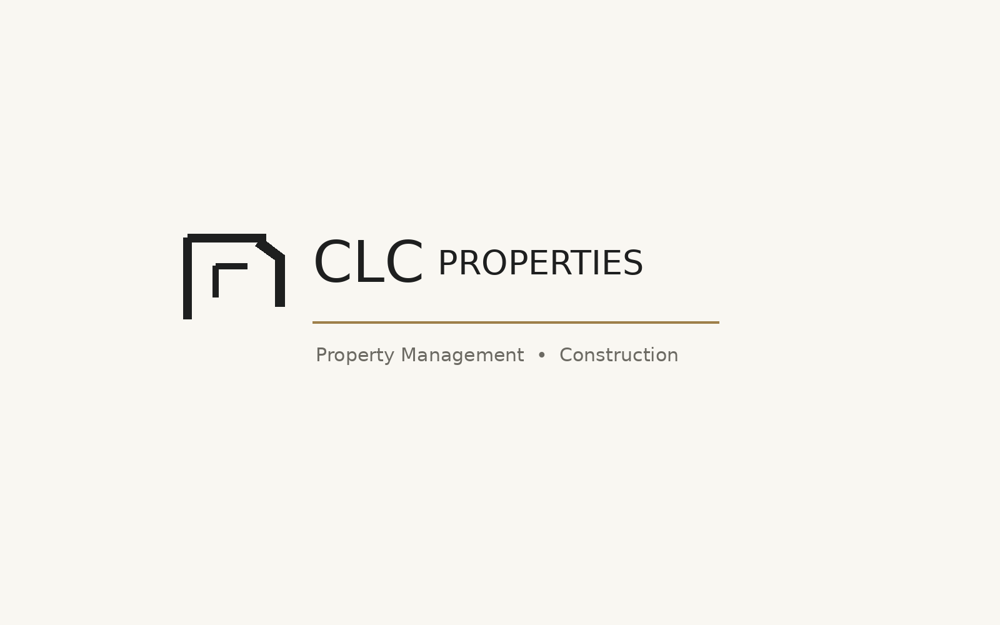
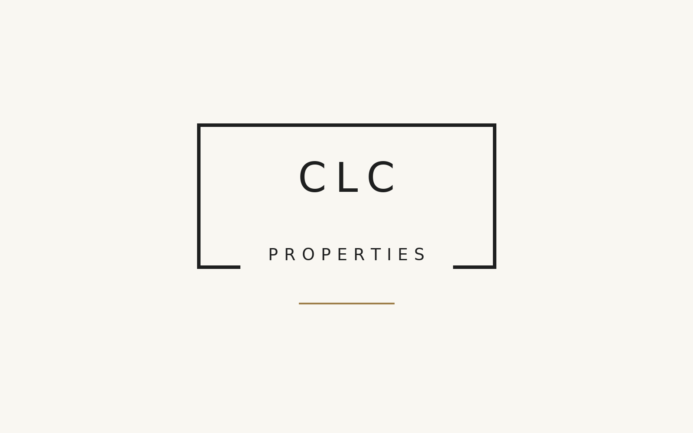
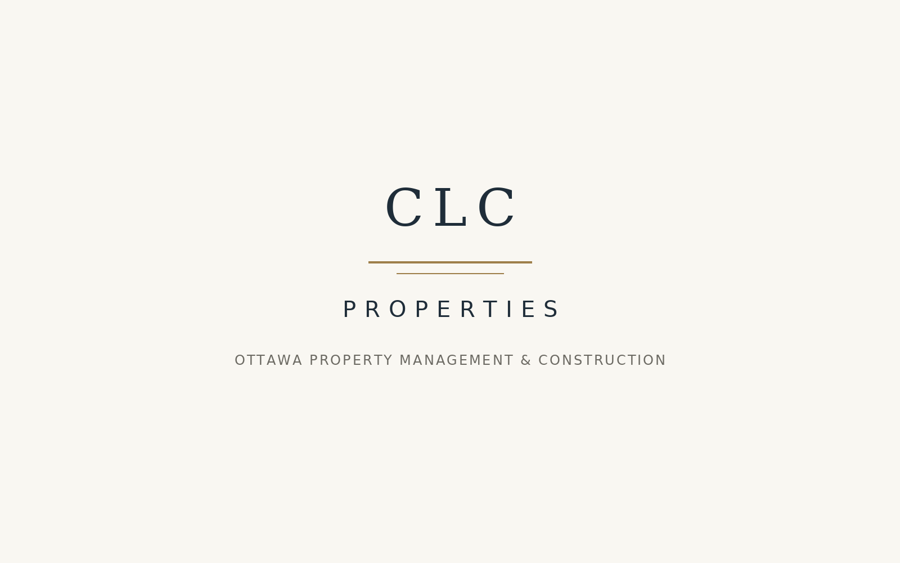
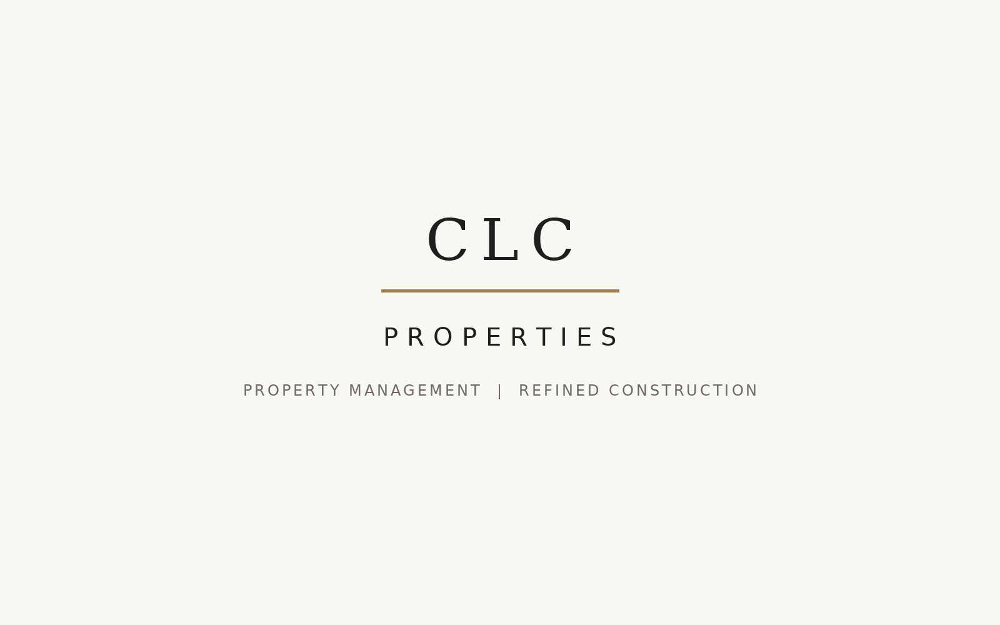

Wordmark Directions
Cleaner text-led directions that could work especially well in a website header or portal branding.

Horizontal Header
Most practical for the website: clear, readable, and easy to place beside navigation.

Framed Wordmark
Feels refined and real-estate oriented, but may be better as a style cue than the final mark.

Navy And Brass
A more premium route that may pair well with owner/investor-facing copy.

Quiet Luxury
Simple and calm; useful if the brand wants to feel understated and high-trust.